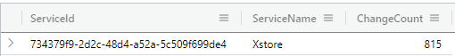
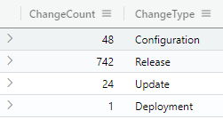
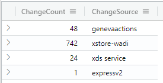
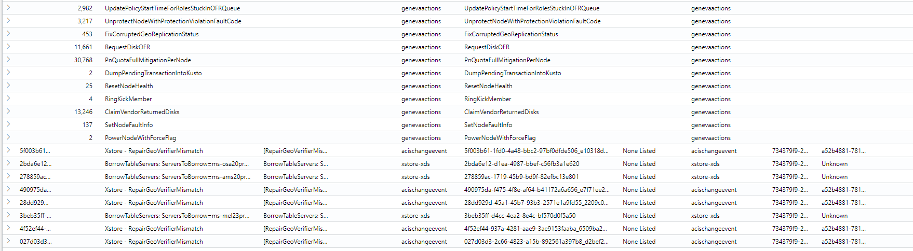
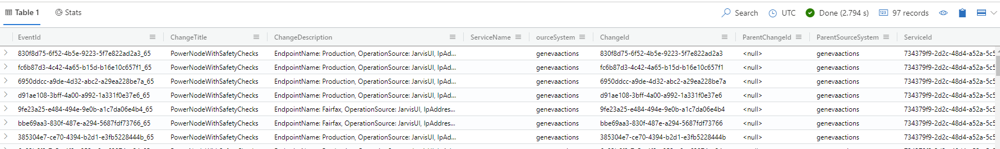

Geneva Actions
Background
The current implementation of ChangeSearchService APIs explicitely ommits GenevaActions from search results as they have a different grouping criteria (HashTitle as opposed to TopMostParent). The key difference here is that:
TopMostParentchanges (such as EV2 or ADORelease) follow a hierarchly parent-child relationship (i.e. ChangeA triggers ChangeB triggers ChangeC). We can construct a logical hierarchy from this and display the results to the customers as is the current experience in ChangeExplorerV2.HashTitlechanges (genevaactions) do not have this parent-child relationship. They can be considered singletons and currently do not follow a logical grouping.
The aim of this document is to provide a solution for display GenevaActions changes to customers.
Solution
Let's provide a solution at the API level:
GetServiceChangeCountsAsync, GetChangeTypeCountsAsync, GetChangeSourceCountsAsync
These three APIs are very similar, with the only distinct being that the results they returned are slightly different based on the grouping criteria.
let FilteredTimeMaterializedView = materialized_view('ChangeEventMaterializedView', 10m)
| where StartTime between(ChangeStartTime..ChangeEndTime)
or EndTime between(ChangeStartTime..ChangeEndTime)
or ChangeStartTime between(StartTime..EndTime) and EndTime < datetime('9999-01-01')
or ChangeEndTime between(StartTime..EndTime) and EndTime < datetime('9999-01-01');
let AllChangeTypes = FilteredTimeMaterializedView
| where ServiceTreeGuid in (ServiceId)
and (LocationName in (IncludeLocationIds) or array_length(IncludeLocationIds) == 0)
and (LocationName !in (ExcludeLocationIds) or array_length(ExcludeLocationIds) == 0)
and (ActionName !in (ExcludeChangeTypes) or array_length(ExcludeChangeTypes) == 0)
and (ExternalSourceName !in (ExcludeChangeSources) or array_length(ExcludeChangeSources) == 0)
| join kind = leftouter(materialized_view('ChangeGroupMaterializedView',10m)) on $left.ExternalId ==$right.ChangeId
| join kind = leftouter(FilteredTimeMaterializedView) on $left.GroupId == $right.ExternalId
| extend groupid = case (GroupType == 'TopParent', coalesce(ExternalId1, ExternalId), GroupType == 'HashTitle', Title, isempty(GroupId) == false, GroupId, ExternalId)
| join kind = leftouter(ChangeExplorer_ServiceTreeServicesMetadata) on $left.ServiceTreeGuid == $right.ServiceId
where ExternalParentId in ('<null>', 'None Listed');
AllChangeTypes
-----------------------------------------------------------------------------------------------
| summarize ChangeCount = dcount(groupid) by ServiceId=ServiceTreeGuid, ServiceName=ServiceName2
-----------------------------------------------------------------------------------------------
| summarize ChangeCount = dcount(groupid) by ActionName
| project ChangeCount,ChangeType=ActionName
-----------------------------------------------------------------------------------------------
| summarize ChangeCount = dcount(groupid) by ExternalSourceName
| project ChangeCount,ChangeSource=ExternalSourceName
-----------------------------------------------------------------------------------------------
Testing this yielded:



GetServiceGroupedChangesAsync
This API works very similar to the ones before, except it has logic to aggregate the results:
let FilteredTimeMaterializedView = materialized_view('ChangeEventMaterializedView', 10m)
| where StartTime between(ChangeStartTime..ChangeEndTime)
or EndTime between(ChangeStartTime..ChangeEndTime)
or ChangeStartTime between(StartTime..EndTime) and EndTime < datetime('9999-01-01')
or ChangeEndTime between(StartTime..EndTime) and EndTime < datetime('9999-01-01');
let AllChangeTypes = FilteredTimeMaterializedView
| where ServiceTreeGuid in (ServiceId)
and (LocationName in (IncludeLocationIds) or array_length(IncludeLocationIds) == 0)
and (LocationName !in (ExcludeLocationIds) or array_length(ExcludeLocationIds) == 0)
and (ActionName !in (ExcludeChangeTypes) or array_length(ExcludeChangeTypes) == 0)
and (ExternalSourceName !in (ExcludeChangeSources) or array_length(ExcludeChangeSources) == 0)
| join kind = leftouter(materialized_view('ChangeGroupMaterializedView',10m)) on $left.ExternalId ==$right.ChangeId
| join kind = leftouter(FilteredTimeMaterializedView) on $left.GroupId == $right.ExternalId
| extend groupid = case (GroupType == 'TopParent', coalesce(ExternalId1, ExternalId), GroupType == 'HashTitle', Title, isempty(GroupId) == false, GroupId, ExternalId)
| join kind = leftouter(ChangeExplorer_ServiceTreeServicesMetadata) on $left.ServiceTreeGuid == $right.ServiceId
| where ExternalParentId in ('<null>', 'None Listed');
let TopParentGroupedChanges = AllChangeTypes
| where GroupType != 'HashTitle'
| project EventId = strcat(ExternalId, '_', ExternalSource), ChangeTitle = Title, ChangeDescription = Description, ServiceName='',
SourceSystem = ExternalSourceName, ChangeId = ExternalId, ParentChangeId = ExternalParentId, ParentSourceSystem = ExternalSourceName,
ServiceId = ServiceTreeGuid, Component = ComponentName, PayloadSystem = '', PayloadId = BuildNumber, LocationId = LocationName,
DeploymentTarget = LocationName, DeploymentTargetType = LocationType, ChangeType = ActionName, ChangeState = Status, StartTime, EndTime, ChangeOwner = ''
| limit Limit
| sort by Ranking desc;
let HashTitleGroupedChanges = AllChangeTypes
| where GroupType == 'HashTitle'
| summarize Count = count() by Title
| project EventId = '', Count = Count, ChangeTitle = Title, ChangeDescription = '', ServiceName='',
SourceSystem = 'genevaactions', ChangeId = Title, ParentChangeId = '', ParentSourceSystem = 'genevaactions',
ServiceId = '', Component = '', PayloadSystem = '', PayloadId = '', LocationId = '',
DeploymentTarget = '', DeploymentTargetType = '', ChangeType = '', ChangeState = '', StartTime='', EndTime='', ChangeOwner = '' ;
HashTitleGroupedChanges
| union TopParentGroupedChanges
| limit Limit
In the above, we are creating two tables; one for GenevaActions and one for all other types. We then union these changes together and return the results back to the frontend for display. Below is a sample of the result:

Some considerations:
- I added a
Countfield to the response; this would indicate the number of geneva actions with that title that satisfy the constraints by the customer. - A lot of the fields are ommited for geneva actions since they can't accurately be consiladated into a single header.
- We can determine in what order we want to display the results to the customer, i.e. if we want geneva actions on top, below, mixed in or some other methodology.
GetChangesAsync
This would also work very similar as before; the only difference would be the search criteria changing from ExternalParentId to Title:
let FilteredTimeMaterializedView = materialized_view('ChangeEventMaterializedView', 10m)
| where StartTime between(ChangeStartTime..ChangeEndTime)
or EndTime between(ChangeStartTime..ChangeEndTime)
or ChangeStartTime between(StartTime..EndTime) and EndTime < datetime('9999-01-01')
or ChangeEndTime between(StartTime..EndTime) and EndTime < datetime('9999-01-01');
FilteredTimeMaterializedView
| where Title == ChangeTitle
and (ComponentName in (ComponentNames) or array_length(ComponentNames) == 0)
and (LocationName in (IncludeLocationIds) or array_length(IncludeLocationIds) == 0)
and (LocationName !in (ExcludeLocationIds) or array_length(ExcludeLocationIds) == 0)
and (ActionName !in (ExcludeChangeTypes) or array_length(ExcludeChangeTypes) == 0)
and (ExternalSourceName !in (ExcludeChangeSources) or array_length(ExcludeChangeSources) == 0)
| project EventId = strcat(ExternalId, '_', ExternalSource), ChangeTitle = Title, ChangeDescription = Description, ServiceName='',
ourceSystem = ExternalSourceName, ChangeId = ExternalId, ParentChangeId = ExternalParentId, ParentSourceSystem = ExternalSourceName,
ServiceId = ServiceTreeGuid, Component = ComponentName, PayloadSystem = '', PayloadId = BuildNumber, LocationId = LocationName,
DeploymentTarget = LocationName, DeploymentTargetType = LocationType, ChangeType = ActionName, ChangeState = Status,
StartTime, EndTime, ChangeOwner = ''
| limit Limit
| sort by Ranking desc
In the previous case of the genevaactions with PowerNodeWithSafetyChecks, we had 97 entries; this results in 97 entries being generated:

This would require to modify the API to add an additional field, namely isGenevaAction so that we don't waste compute time in the backend determining that (would require a search on Titles in ExternalParentId before executing a search on genevaactions).